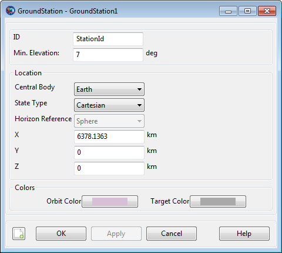

GroundStation
GroundStation — A ground station model.
Description
A GroundStation models a facility fixed to the surface of a CelestialBody. There are several state representations available for defining the location of a ground station including Cartesian and spherical. This resource cannot be modified in the mission sequence.
See Also: ContactLocator, CoordinateSystem, Color
Fields
| Field | Description | ||||||||||||
|---|---|---|---|---|---|---|---|---|---|---|---|---|---|
| AddHardware | List of all Transmitter, Receiver, and Antenna hardware used by ground station
| ||||||||||||
| Altitude | The altitude of the station with respect to the HorizonReference.
| ||||||||||||
| CentralBody | The central body of the GroundStation.
| ||||||||||||
| DataSource | Source of where to get Temperature, Pressure, Humidity, and MinimumElevationAngle. If the value is Constant, then the values of these parameters, as set in the GroundStation resource, remain constant for all relevant measurements. Currently, the value of Constant is the only allowed value.
| ||||||||||||
| ErrorModels | User-defined list of ErrorModel objects that describe the measurement error models used for this GroundStation.
| ||||||||||||
| HorizonReference | The system used for the horizon. Sphere is equivalent to Geocentric, Ellipsoid is equivalent to Geodetic.
| ||||||||||||
| Humidity | Humidity at ground station used to calculate tropospheric correction. GMAT only uses this value if DataSource is set to Constant.
| ||||||||||||
| Id | Id of the GroundStation used in simulation and estimation
| ||||||||||||
| IonosphereModel | Specification of ionospheric model used in the light time calculations.
| ||||||||||||
| Latitude | The latitude of the station with respect to HorizonReference.
| ||||||||||||
| Location1 | The first component of the GroundStation location. When StateType is Cartesian, Location1 is the x-component of station location in the body-fixed system. When StateType is Spherical or Elliposoid, Location1 is the Longitude (deg.) of the GroundStation.
| ||||||||||||
| Location2 | The second component of the GroundStation location. When StateType is Cartesian, Location2 is the y-component of station location in the body-fixed system. When StateType is Spherical or Ellipsoid, Location2 is the Latitude (deg.) of the GroundStation.
| ||||||||||||
| Location3 | The third component of the GroundStation location. When StateType is Cartesian, Location3 is the z-component of station location in the body-fixed system. When StateType is Spherical or Elliposoid, Location3 is the height (km) of the GroundStation above the reference shape.
| ||||||||||||
| Longitude | The longitude of the station.
| ||||||||||||
| MinimumElevationAngle | Minimum elevation angle constraint for use with ContactLocator. For navigation related processing, this is minimum elevation angle for signal transmitted from spacecraft to ground station. During simulation, this is the minimum elevation angle required in order for data to be output. During estimation, this is the minimum elevation angle required for data to be used to calculate an estimate. GMAT only uses this value if DataSource is set to Constant.
| ||||||||||||
| OrbitColor | Allows you to select available colors for a
user-defined GroundStation. The
GroundStation object is drawn on a
spacecraft's ground track plot created by
GroundTrackPlot 2D graphics display resource.
The colors can be identified through a string or an integer array.
For example: Setting groundstation's color to red can be done in
following two ways:
| ||||||||||||
| Pressure | Air pressure at ground station used to calculate tropospheric correction. GMAT only uses this value if DataSource is set to Constant.
| ||||||||||||
| StateType | The type of state used to define the location of the ground station. For example, Cartesian or Ellipsoid.
| ||||||||||||
| SpiceFrameId | The station's SPICE frame ID. Note this field does not have a default, and is not saved to script, unless it is set to a specific allowed value.
| ||||||||||||
| TargetColor | Allows you to select available colors for a
user-defined GroundStation object during
iterative processes such as Differential Correction or
Optimization. The target color can be identified through a string
or an integer array. For example: Setting groundstation's target
color to yellow color can be done in following two ways:
| ||||||||||||
| Temperature | Air temperature at ground station used to calculate tropospheric correction. GMAT only uses this value if DataSource is set to Constant.
| ||||||||||||
| TroposphereModel | Specification of tropospheric model used in the light time calculations.
|
GUI
To create a GroundSation, starting from the Resource Tree:
Right-click the GroundStation folder and select Add Ground Station.
Double-click GroundStation1.
|  |
You can set the ground station location in several state representations. The Cartesian representation is illustrated above. To set the Longitude, Latitude, and Altitude to 45 deg., 270 deg., and 0.1 km respectively, with respect to the reference ellipsoid:
In the StateType menu, select Spherical.
In the HorizonReference menu, select Ellipsoid.
In the Latitude text box, type
45.In the Longitude text box, type
270.In the Altitude text box, type
0.1.
 |
Remarks
The GroundStation model allows you to configure a facility by defining the location in body-fixed coordinates using one of several state representations. GMAT supports Cartesian, Sphere, and Ellipsoid representations and examples below show how to configure a GroundStation in each representation. When using the Ellipsoid model or Sphere representations, GMAT uses the physical properties - flattening and radius for example - defined on the CelestialBody resource.
Setting Colors On a Ground Station Facility
GMAT allows you to set colors on a ground station facility that you create. The GroundStations are drawn on the GroundTrackPlot 2D graphics display. The GroundStation object's OrbitColor and TargetColor fields are used to set colors on a ground station facility. See the Fields section to read more about these two fields. Also See Color documentation for discussion and examples on how to set colors on a ground station facility.
Examples
Configure a GroundStation in Geodetic coordinates.
Create GroundStation aGroundStation
aGroundStation.CentralBody = Earth
aGroundStation.StateType = Spherical
aGroundStation.HorizonReference = Ellipsoid
aGroundStation.Location1 = 60
aGroundStation.Location2 = 45
aGroundStation.Location3 = 0.01
% or alternatively
aGroundStation.Latitude = 60
aGroundStation.Longitude = 45
aGroundStation.Altitude = 0.01Configure a GroundStation in Geocentric coordinates.
Create GroundStation aGroundStation
aGroundStation.CentralBody = Earth
aGroundStation.StateType = Spherical
aGroundStation.HorizonReference = Sphere
aGroundStation.Location1 = 59.83308194090783
aGroundStation.Location2 = 45
aGroundStation.Location3 = -15.99424674414058
% or alternatively
aGroundStation.Latitude = 59.83308194090783
aGroundStation.Longitude = 45
aGroundStation.Altitude = -15.99424674414058
Configure a GroundStation in Geocentric coordinates.
Create GroundStation aGroundStation
aGroundStation.CentralBody = Earth
aGroundStation.StateType = Cartesian
aGroundStation.Location1 = 2260.697433050543
aGroundStation.Location2 = 2260.697433050542
aGroundStation.Location3 = 5500.485954732006
Configure a GroundStation that, when used for navigation, will model how the RF signal is refracted in the atmosphere.
Create GroundStation aGroundStation
aGroundStation.IonosphereModel = 'IRI2007';
aGroundStation.TroposphereModel = 'HopfieldSaastamoinen';
BeginMissionSequence;Attach a Transmitter and Receiver resource to a GroundStation.
Create Transmitter Transmitter1
Create Receiver Receiver1
Create GroundStation aGroundStation;
aGroundStation.AddHardware = {Transmitter1, Receiver1};
BeginMissionSequence;